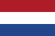

Üdvözöllek az oldalon!
Hollandia (hollandul Nederland) Nyugat-Európa egyik legkisebb, mégis leghíresebb országa. Az emberek többsége a szélmalmokra, a tulipánokra, a biciklikre és a sajtokra gondol először, de a „Földalatti ország” ennél sokkal többet tartogat. Ezen a weboldalon négy fejezetben mutatom be a történelmét, a legszebb helyeit, valamint a kultúráját és az ételeit.
Az ország röviden
A „Hollandia” elnevezés valójában csak az ország két tartományát, Észak- és Dél-Hollandiát jelöli, a hivatalos név Holland Királyság. A köznyelvben azonban az egész országra használjuk. Különlegessége, hogy területének jelentős része a tengerszint alatt fekszik, ezért a lakók évszázadok óta gátakkal, zsilipekkel és szivattyúkkal védekeznek a víz ellen.
| Adat | Érték |
|---|---|
| Hivatalos név | Holland Királyság (Koninkrijk der Nederlanden) |
| Főváros | Amszterdam |
| Kormányzati székhely | Hága |
| Államforma | alkotmányos monarchia |
| Lakosság | kb. 18 millió fő |
| Terület | kb. 41 500 km² (a vízfelületekkel együtt) |
| Hivatalos nyelv | holland (Friesland tartományban a fríz is) |
| Pénznem | euró (EUR) |
| Legmagasabb pont | Vaalserberg, kb. 322 m |

Miért érdekes ez az ország?
- Az ország nagy részét az emberek vették el a tengertől, ezeket a területeket poldereknek hívják.
- A bicikli a mindennapi közlekedés alapja, szinte mindenhol külön kerékpárút található.
- A 17. században Hollandia a világ egyik leggazdagabb tengeri hatalma volt.
- A tulipántermesztés ma is világhírű, a virágok jelentős részét exportálják.
További információ
Ha szeretnél többet megtudni, ezeket az oldalakat ajánlom: